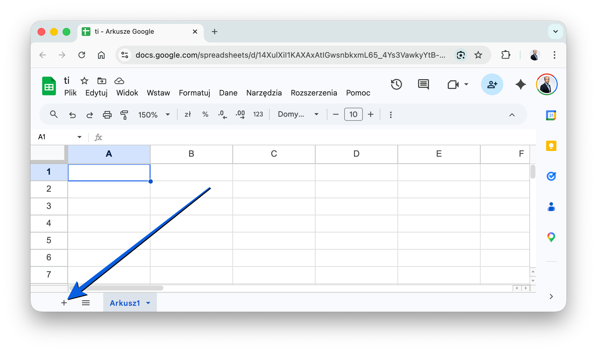

Technologia Informacyjna
Laboratorium 3: Wprowadzenie do Google Sheets.
Wprowadzenie
Google Sheets (Arkusze Google) to internetowy arkusz kalkulacyjny, umożliwiający tworzenie i analizę danych w tabelach. Działa w chmurze, umożliwiając współpracę wielu użytkowników w czasie rzeczywistym. Jest to darmowe narzędzie będące częścią pakietu Google Workspace, które łatwo integruje się z innymi aplikacjami.
Cel laboratorium
Celem zajęć jest zapoznanie się z aplikacją Google Sheets oraz opanowanie podstawowej analizy danych. Podczas pracy poznasz pojęcia arkusza, komórki i formuł, będziesz w stanie formatować dane, używać podstawowych funkcji do prostych kalkulacji oraz tworzyć wykresy, by podnieść czytelność prezentowanych parametrów.
Podstawowe pojęcia
Arkusz: Pojedyncza strona w pliku Google Sheets, składająca się z siatki wierszy i kolumn.
Wiersz: Poziomy układ komórek, oznaczony liczbami (1, 2, 3...).
Kolumna: Pionowy układ komórek, oznaczony literami (A, B, C...).
Komórka: Pojedynczy prostokąt, w którym znajdują się dane, oznaczony adresem (np. A1, B2).

Tutorial: Jak dodać nowy arkusz?
W lewym dolnym rogu ekranu znajduje się przycisk "+" (Dodaj arkusz).

Tutorial: Formatowanie warunkowe
To narzędzie, które pozwala automatycznie formatować komórki (np. zmieniać kolor tła lub tekstu) na podstawie określonych warunków. Przydaje się na przykład do oznaczania na zielono komórek z wynikami powyżej 2.0.
Tutorial: Format danych
Format danych pozwala określić, jak dane są wyświetlane w komórkach (np. jako liczby z dwoma miejscami po przecinku, daty w odpowiednim i oczekiwanym formacie lub waluty).
Tutorial: Formuły
Formuły to wyrażenia wykonujące obliczenia na danych w arkuszu. Formuła
zawsze zaczyna się od znaku równości (=). Można używać wbudowanych funkcji (np.
SUM())
oraz operatorów matematycznych (np. +, -, *,
/).
Wstawienie:
=SUM(C3:C5)Sumuje wartości w komórkach od C3 do C5.
Tutorial: Funkcja COUNTIF()
Funkcja COUNTIF() zlicza komórki w danym zakresie, które spełniają określone z góry
kryteria.
Składnia:
COUNTIF(zakres; kryteria)Przykład:
COUNTIF(C2:C5; ">2")Zlicza, ile razy w zadanym zakresie od C2 do C5 wynik jest większy od 2.
Tutorial: Tworzenie wykresów
Zaznacz dane, które chcesz zaprezentować na wykresie. Kliknij Wstaw w górnym obszarze menu, a następnie wybierz Wykres. Później, w Edytorze wykresów po prawej stronie, po prostu wybierz typ odpowiadającego ci wykresu i dodatkowo dostosuj jego ogólny wygląd.
Tutorial: Funkcja IF()
Funkcja IF() zwraca jedną wartość, jeśli dany zadeklarowany warunek logiczny jest
spełniony, oraz inną docelową wartość, jeśli ten nie jest spełniony.
Składnia:
IF(warunek; wartość_jeśli_prawda; wartość_jeśli_fałsz)Przykład z życia:
=IF(C3>2; "Zal"; "Brak zal")Jeżeli wartość wskazana w komórce C3 jest wyższa niż 2, nastąpi zwrócenie "Zal", w przeciwnym razie wpisze po prostu "Brak zal".
Zwróć uwagę, że wystarczy wprowadzić formułę do jednej komórki, a następnie przeciągnąć ją do pozostałych a formuła dostosuje się do każdej komórki.
Zadanie 1: Rekordy biegowe (wprowadzanie i edycja danych)
Dane: Lista 10 zawodników, ich imiona, nazwiska i czasy uzyskane w biegu na 100 metrów.
Imię;Nazwisko;Czas (sekundy)
Jan;Kowalski;10,5
Anna;Nowak;11,2
Piotr;Wiśniewski;10,8
Maria;Dąbrowska;11,5
Andrzej;Lewandowski;10,9
Katarzyna;Wójcik;11,1
Tomasz;Kamiński;10,7
Magdalena;Kowalczyk;11,4
Marek;Zieliński;11,0
Ewa;Szymańska;11,3Polecenie: Utwórz nowy arkusz i wprowadź dane do nowego arkusza. Użyj klawiszy Enter (przenosi do następnego wiersza), Tab (przenosi do następnej kolumny) i F2 (edytuj komórkę) do nawigacji i edycji danych.
Zadanie 2: Analiza wyników skoku w dal (formatowanie danych)
Dane: Wyniki 15 zawodników w skoku w dal (w metrach).
Imię;Nazwisko;Wynik (metry)
Jan;Kowalski;6,85
Anna;Nowak;7,12
Piotr;Wiśniewski;6,98
Maria;Dąbrowska;7,25
Andrzej;Lewandowski;6,78
Katarzyna;Wójcik;7,05
Tomasz;Kamiński;7,30
Magdalena;Kowalczyk;6,92
Marek;Zieliński;7,18
Ewa;Szymańska;7,20
Krzysztof;Jankowski;6,88
Alicja;Mazur;7,00
Paweł;Krawczyk;7,35
Beata;Gajewska;6,95
Adam;Rutkowski;7,22Polecenie: Utwórz nowy arkusz i wprowadź dane. Sformatuj komórki, aby wyświetlały wyniki z dokładnością do dwóch miejsc po przecinku. Zastosuj formatowanie warunkowe, aby wyróżnić wyniki powyżej 7 metrów.
Zadanie 3: Obliczanie BMI (podstawowe funkcje)
Dane: Lista 20 osób, ich waga (w kilogramach) i wzrost (w metrach).
Imię;Nazwisko;Waga (kg);Wzrost (m)
Jan;Kowalski;80;1,80
Anna;Nowak;65;1,65
Piotr;Wiśniewski;90;1,85
Maria;Dąbrowska;70;1,70
Andrzej;Lewandowski;85;1,90
Katarzyna;Wójcik;60;1,60
Tomasz;Kamiński;75;1,75
Magdalena;Kowalczyk;68;1,68
Marek;Zieliński;95;1,95
Ewa;Szymańska;72;1,72
Krzysztof;Jankowski;88;1,88
Alicja;Mazur;63;1,63
Paweł;Krawczyk;92;1,92
Beata;Gajewska;67;1,67
Adam;Rutkowski;82;1,82
Karolina;Sokołowska;58;1,58
Rafał;Pawlak;98;1,98
Agata;Lis;78;1,78
Michał;Woźniak;83;1,83
Sylwia;Kozłowska;69;1,69Polecenie: Utwórz nowy arkusz i wprowadź dane. Użyj formuły do obliczenia BMI dla każdej osoby (BMI = waga / wzrost^2). Oblicz średnie BMI dla całej grupy.
Zadanie 4: Wizualizacja postępów (tworzenie wykresów)
Dane: Miesięczne uśrednione wyniki wybranego zawodnika w pływaniu na 50 metrów.
Miesiąc;Czas (sekundy)
Styczeń;32,5
Luty;31,8
Marzec;31,2
Kwiecień;30,9
Maj;30,5
Czerwiec;30,1
Lipiec;29,8
Sierpień;29,5
Wrzesień;29,2
Październik;29,0
Listopad;28,8
Grudzień;28,5Polecenie: Utwórz nowy arkusz i wprowadź dane. Utwórz wykres liniowy, aby przedstawić postępy zawodnika w czasie. Dostosuj wygląd wykresu, dodając tytuł (np. "Postępy w pływaniu na 50 metrów") i etykiety osi (oś X: "Miesiąc", oś Y: "Czas (sekundy)").
Zadanie 5: Porównanie wyników drużynowych (wykresy porównawcze)
Dane: Kompletne wyniki reprezentujące poszczególne trzy drużyny w ramach piłkarskiego turnieju szkolnego (liczone poprzez wprowadzanie sumarycznych zdobytych celnych strzałów po każdej stronie podanej w meczu).
Mecz;Real Madryt;FC Barcelona;Atletico Madryt
Mecz 1;3;1;2
Mecz 2;2;4;0
Mecz 3;1;2;3
Mecz 4;4;0;1
Mecz 5;0;3;2
Mecz 6;2;1;4
Mecz 7;3;2;0
Mecz 8;1;4;3
Mecz 9;4;0;2
Mecz 10;2;3;1Polecenie: Utwórz nowy arkusz i wprowadź dane. Utwórz wykres kolumnowy, aby porównać wyniki drużyn. Dodaj tytuł, legendę i dostosuj kolory, aby wykres był czytelny.
Zadanie 6: Analiza frekwencji na zajęciach Anatomii (funkcje logiczne)
Dane: Ujednolicona lista wszystkich studentów posiadających wpis oraz odnotowana frekwencja w postaci danych: "O" (obecny) oraz "N" (nieobecny).
Student;2023-10-02;2023-10-09;2023-10-16;2023-10-23;2023-10-30;2023-11-06;2023-11-13;2023-11-20;2023-11-27;2023-12-04
Jan Kowalski;O;O;N;O;O;O;N;O;O;N
Anna Nowak;O;O;O;O;O;O;O;O;O;O
Piotr Wiśniewski;N;O;O;N;O;N;O;O;N;O
Maria Dąbrowska;O;N;O;O;N;O;N;O;O;N
Andrzej Lewandowski;O;O;N;N;O;O;N;N;O;O
Katarzyna Wójcik;O;O;O;O;O;O;O;O;O;O
Tomasz Kamiński;N;N;O;O;N;N;O;O;N;N
Magdalena Kowalczyk;O;O;N;O;O;O;N;O;O;O
Marek Zieliński;O;N;O;N;O;N;O;N;O;N
Ewa Szymańska;O;O;O;O;N;O;O;O;O;NPolecenie: Utwórz nowy arkusz i wprowadź dane. Użyj funkcji COUNTIF(), aby obliczyć frekwencję każdego studenta. Jeżeli student posiada więcej niż 2 nieobecności, oznacz go jako "Do skreślenia"
Podsumowanie
Arkusze kalkulacyjne to potężne narzędzie, które może być wykorzystywane do wielu celów. W sporcie możesz je wykorzystywać do analizy wyników i tworzenia wykresów.
Strona główna